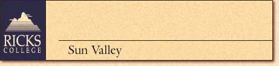
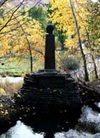

 |
Located in the heart of Idaho, Sun Valley/ Ketchum
is a year-round recreational resort. Because of its picturesque setting
and mild climate, movie stars and celebrities frequently visit; the late
Ernest Hemingway made the area his home. At 5,900 feet, Sun Valley lies
175 miles west of Ricks College. Lodge provides double occupancy, limited
singles, extra charge. Private bath. Classes and meals are at the lodge.
No alcohol allowed.
Bus: Y Plane: Y Train: N Ferry: N |
| Sept 10-16, 2000 - $488 | Top • Back |
| INVESTIGATING
THE GRAY WOLF: SYMBOL OF THE WILD
Starting with only 15 wolves translocated from Canada, the Idaho Recovery Program now has approximately 115 wolves and 12 known wolf packs in Idaho. Learn about the gray wolf's struggles and success for existence in today's society. GEOLOGY: CENTRAL IDAHO'S ROCKS AND
NUGGETS
THE LIFE AND WRITINGS OF ERNEST HEMINGWAY
|
|